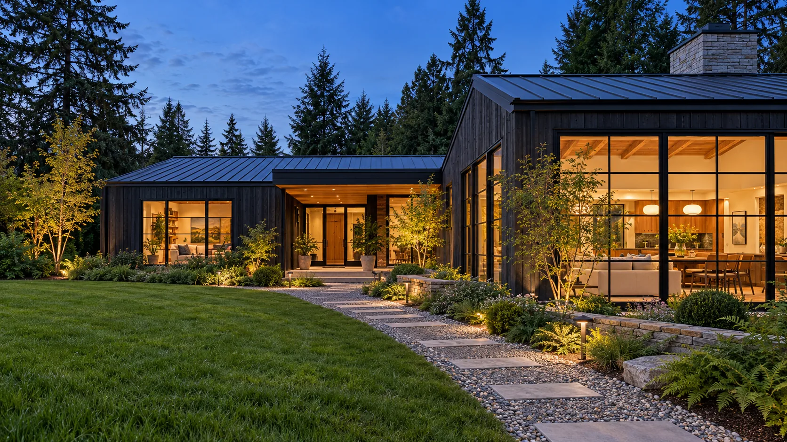
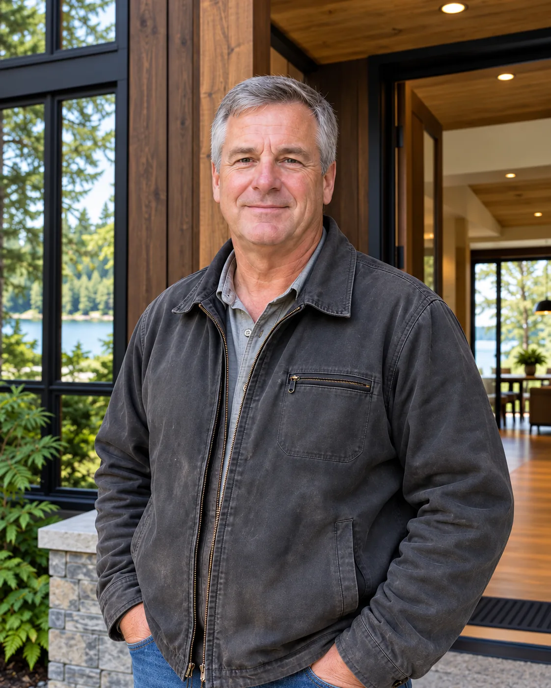

Custom Home Building
Stillwater builds one-of-a-kind homes on your land, from a single-level house on a flat lot to a three-story home stepped down a waterfront bluff.
Learn more
Custom home builder in Gig Harbor, Port Orchard, Poulsbo & Bainbridge Island
Stillwater builds custom homes and additions on wooded and waterfront lots around Gig Harbor. We start with your land and the way you want to live, and we put the scope, the allowances and the schedule in writing before we break ground.
Over 250 homes built
What we do
Stillwater builds one-of-a-kind homes on your land, from a single-level house on a flat lot to a three-story home stepped down a waterfront bluff.
Learn more
For when the house is in the right place but too small.
Learn more
Most of the surprises on a custom home are in the ground.
Learn moreA note from our owner
Most of the homes we build sit on lots with big firs, a slope, a view of the water, or all three. Before anyone draws a floor plan, I want to walk the property with you: where the sun comes in, where the water goes when it rains, which trees you want to keep, and how a concrete truck gets down the driveway. Then we talk about how you want to live in the house. You’ll know what the site is going to take before you commit to anything.

Daniel BrooksOwner, Stillwater